U30 Pro, kendi ekranı olan bir Linux router
ZTE U30 Pro (MU5358, Unisoc UMS9632) üzerinde Android'in yanında OpenWrt. Mobil veri, Wi-Fi 6 hotspot, USB üzerinden SSH ve hotspot'un yuvarlak ekranında bir router gösterge paneli; Türkçe, İngilizce ve Çince. Android yerinde kalıyor; her yeniden başlatmada cihaz kendiliğinden ona dönüyor.
MU300 Linux'un (ZTE F50 ve U30 Air) kardeş projesi; Türkiye'de aynı tek kişinin işi.
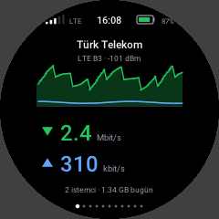
Durum: çalışan bir araştırma portu
Şimdiden iyi yaptığı şeyler: 3 saatlik testte her kontrol yeşil geçti (USB, şebeke kaydı, mobil veri, ping, Wi-Fi). Çekirdek hatası çıkmadı, NV bölümleri bayt bayt aynı kaldı, bellek kullanımı sabit seyretti. Art arda altı yeniden başlatmada her şey kendiliğinden geldi.
Neler çalışıyor
- Mobil veri (LTE)Android'in kendi modem servisleri bir chroot'ta, MU300 Linux'taki gibi. Android'in 11-12 Mbit/s verdiği yerde 14-19 Mbit/s.
- Wi-Fi 6 hotspotAIC8800D80X2, 5 GHz, HE80, WPA2; kartın kendi MAC adresi ve kalibrasyonu ile.
- EkranYuvarlak ekranda Türkçe, İngilizce ve Çince bir gösterge paneli: canlı hız grafikli ana sayfa, şebeke, karekodla katılmalı Wi-Fi, istemciler, trafik, SMS, pil, sistem, ayarlar, güç ve log. Tek bir 1,6 MB ikili, yaklaşık 6 MB RAM, ekran açıkken CPU'nun %0,5'i. Launcher görünümündeki "klasik" arayüz seçenek olarak duruyor.
- TuşlarGüç: kısa basış ekranı açar/kapatır, basılı tutunca kapatır. Wi-Fi tuşu basılı tutulunca hotspot'u kapatır/açar.
- USB ağı ve SSHBilgisayara tak:
ssh root@192.168.58.1; ayrıca bir seri konsol. - GPUAndroid'in sürücüsüyle Mali-G57: OpenGL ES 3.2, EGL 1.5 ve Vulkan; gerektiğinde yükleniyor.
- Android yerinde kalıyorLinux her zaman tek seferlik bir deneme olarak açılıyor. Yeniden başlatma, kapatma, bir çekirdek hatası ya da başarısız açılış, hepsi Android'e dönüyor.
- Henüz yokUyku ve güç tasarrufu, %100'ün altında şarjın doğrulanması, uzun süre yalnız pille çalışma, Bluetooth, NFC, SIM yuvası algılama, USB OTG, arama ve ses, SMS gönderme, OpenCL.
Ekran
U30 Pro'nun 240×240 yuvarlak bir ekranı ve dokunmatiği var. Linux altında bu ekran bir router gösterge paneli:
u30ui2, C ile yazıldı ve doğrudan çekirdeğin DRM arayüzüne çiziyor; Türkçe, İngilizce ve Basitleştirilmiş
Çince (dil, ekrandaki bir ayar). Sayfalar için yana kaydır; aşağı kaydırmak ana sayfaya döndürür ya da açık olanı
kapatır. Açılışta kilitli (açmak için basılı tut), iki dakika dokunulmayınca yeniden kilitleniyor; güç tuşu ekranı
açıp kapatıyor, zaman aşımı kapatıyor.
Yeni: gösterge paneli 2026-10-30'da launcher görünümlü arayüzün yerine varsayılan oldu ve şimdiye kadar tek bir cihazda çalıştı. Tamamı, yazı tipleri içinde, tek bir statik 1,6 MB ikili; yaklaşık 6 MB RAM ve ekran açıkken, ana sayfanın canlı grafiğiyle, CPU'nun %0,5'i. Ekran kapalıyken hiçbir şey çizilmiyor ve okumalar 30 saniyede bir geçişe iniyor. Aşağıdaki görüntüler örnek verilerle bilgisayarda alınmış önizlemeler.
Ana sayfa 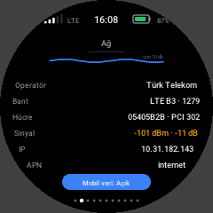
Şebeke 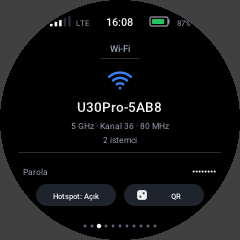
Wi-Fi 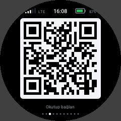
Karekodla katıl 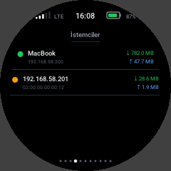
İstemciler 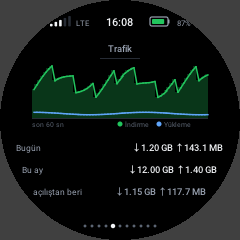
Trafik 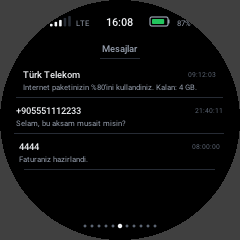
Mesajlar 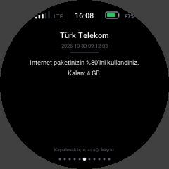
Açılmış bir mesaj 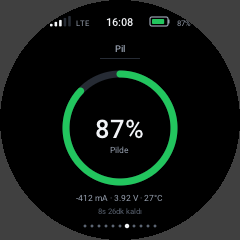
Pil 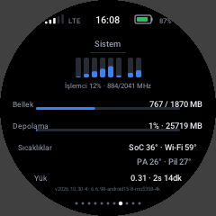
Sistem 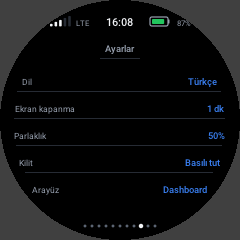
Ayarlar 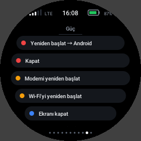
Güç 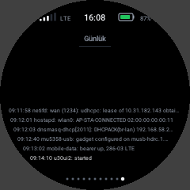
Log
Klasik arayüz
İlk arayüz u30ui, U30'un Android launcher'ının görünümünde (aynı yapraklar, renkler ve sayfalar, Android
olmadan), sistemde "klasik" arayüz olarak duruyor. İkisinin de ayarlar sayfası diğerine geçiriyor.
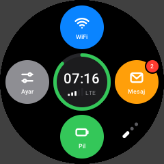
Ana ekran 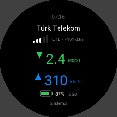
Durum Karekodla katıl 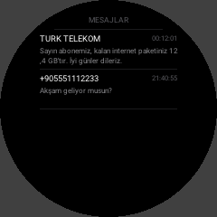
SMS 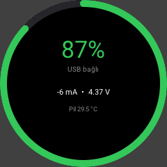
Pil 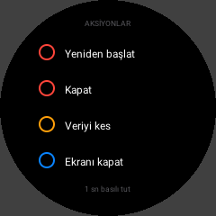
Güç işlemleri
Anlatmaya değer bir ayrıntı: panel baş aşağı takılı. Görüntüyü CPU'da çevirince satırlar panele kendi tarama yönünün tersinden gidiyordu ve hareket eden her kare yırtılıyordu. Artık görüntüyü panel kendisi çeviriyor (MADCTL yazmacı, küçük bir çekirdek modülüyle ayarlanıyor) ve yırtılma yok.
Nasıl açılıyor
Android bir kerelik slot b ister
Root'lu Android,
miscbölümüne tek seferlik bir "slot b'yi dene" isteği yazar.LK slot b'yi başlatır
Kartın kendi GKI 6.6 çekirdeği, küçük bir ekle yeniden derlenmiş hali, bizim
init_boot_bramdisk'imizle.Ramdisk hemen geri alır
Vendor modüllerini yükler, USB'yi açar ve 1,6. saniyede, bir şey ters gitmeden önce
misc'i Android'e geri çevirir.OpenWrt başlar
eMMC'de
userdata'nın arkasındaki kendi alanından. Modem NV bölümlerini yalnızca RAM'deki kopyalar olarak görür; gerçek NV'ye hiç yazılmaz.
Slot a'ya ve NV bölümlerine hiç yazılmaz. Her yeniden başlatma, kapatma, çekirdek hatası (çekirdek böyle bir hatada kendini yeniden başlatır) ya da başarısız açılış Android'de biter.
Derleme
Çalışmayı takip etmek isteyenler için. Her adım Docker ve adb olan bir bilgisayardan, root'lu bir U30 Pro'ya karşı, tam yedekten sonra yapılır.
- Her şeyi yedekle:
tools/backup-full.sh OUTDIR(her bölüm, cihazda alınan özetlerle karşılaştırılarak). - Çekirdek:
kernel/Dockerfile'ın konteynerindekernel/build.sh(cihazın kendi commit'indeki GKI android15-6.6, artıkernel/mu5358-linux.fragment). - Boot imajları:
boot/build-initboot.py, stok imajlardan veboot/init'teninit_boot_b'yi (veboot_b'yi) üretir. - Kök dosya sistemi: MU300 Linux'un OpenWrt sürümünden
openwrt/build-rootfs.sh;openwrt/customize.shonu bu karta uyarlar. - Android'in dosyaları (modem servisleri, firmware, GPU sürücüsü):
modem/vegpu/içindeki betikler senin cihazından çeker. Repoda yoklar.
Sistemin çalışırkenki hali (servisler, donanım durumu, bilinen davranışlar, logların yeri) docs/GKI-SYSTEM.md dosyasında.
Sık sorulanlar
MU300 Linux ile aynı mı?
MU300 Linux'un OpenWrt'si ve modem araçları üzerine kurulu. Ama U30 Pro farklı bir çip (UMS9632), farklı bir Wi-Fi çipi, bir ekran ve dokunmatik, ve GKI çekirdekli daha yeni bir Android (15) demek. Bu yüzden çekirdek tarafı, açılış yolu, modemin NV düzeni, Wi-Fi ve ekrandaki her şey yeni. MU300 Linux U30 Pro'yu desteklemiyor.
Cihazımı bozabilir mi?
Proje slot a'ya ve NV bölümlerine hiç yazmaz, Linux da hiçbir zaman varsayılan açılış yapılmaz. Yine de root'lu bir cihazda bölüm yazmak hiçbir zaman risksiz değildir; ilk adımın tam yedek olması bu yüzden.
Neden Ubuntu değil de OpenWrt?
Hafif (bütün sistem boştayken birkaç düzine MB kullanıyor), öncelikle bir router ve MU300 Linux'un OpenWrt'si modem araçlarını zaten getiriyor. Ubuntu sonra gelebilir.
Kurulum programı ne zaman?
Yalnız pille çalışma ve şarj doğrulanıp 24 saatlik test geçtikten sonra. Haberler için repoyu takip et.